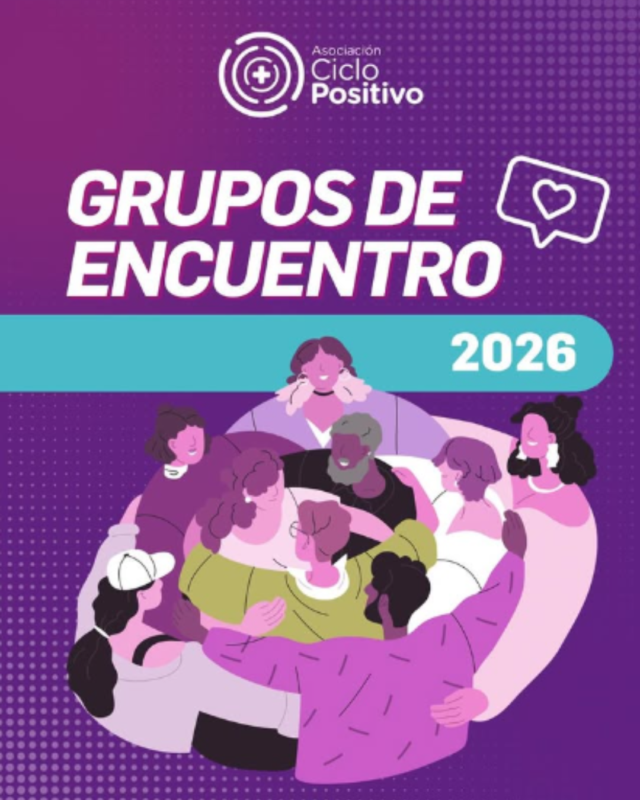

Somos un colectivo de activistas, profesionales y referentes que trabajamos por el acompañamiento integral a poblaciones diversas y en situación de vulnerabilidad.
Somos un colectivo compuesto por activistas, militantes, estudiantes, profesionales de la salud y las ciencias sociales. Nos reunimos para brindar acompañamiento en asuntos jurídicos, psicosociales y asistencia integral.
Afirmamos nuestro compromiso ineludible con la salud pública y la información científica de calidad, promoviendo el estudio y la investigación de la diversidad en todas sus expresiones.

Espacios seguros, confidenciales y de escucha mutua entre pares.
Reuniones periódicas pensadas para conversar sobre vivencias cotidianas, tratamientos y afectos. Un lugar donde compartir sin juicios y encontrarnos con otros que transitan realidades similares.

Charlas, talleres, conversatorios y campañas que impulsamos desde la Asociación.
Espacios abiertos de formación e intercambio sobre salud sexual, derechos y derribo de mitos.
Jornadas recreativas y culturales para conectar con la comunidad en el espacio público.
Producción de contenido informativo y placas de concientización para compartir activamente.
Herramientas esenciales, conceptos clave y derechos que nos amparan.
La legislación actual protege la confidencialidad de tu diagnóstico. No es obligatorio presentar test de VIH para ingresos laborales ni estudios médicos pre-ocupacionales discriminatorios.
Confidencialidad garantizadaTomar la medicación antirretroviral de forma constante reduce la carga viral en sangre a niveles indetectables. Esto significa que **no se transmite el virus** por vía sexual.
Evidencia científicaEl acceso a la medicación antirretroviral es un derecho garantizado. Las obras sociales, prepagas y el sistema público de salud deben proveerla de manera gratuita.
Acceso universalSi tenés dudas sobre testeos, acceso a derechos o querés orientación profesional, existen líneas de atención oficiales y gratuitas en todo el país.
Orientación y consultasMomentos compartidos y postales de nuestros encuentros.
Construyendo redes y acompañamiento todos los días.
Podés ver más imágenes y contenido diario en nuestro perfil de Instagram.
 Ciclo Positivo
Ciclo Positivo